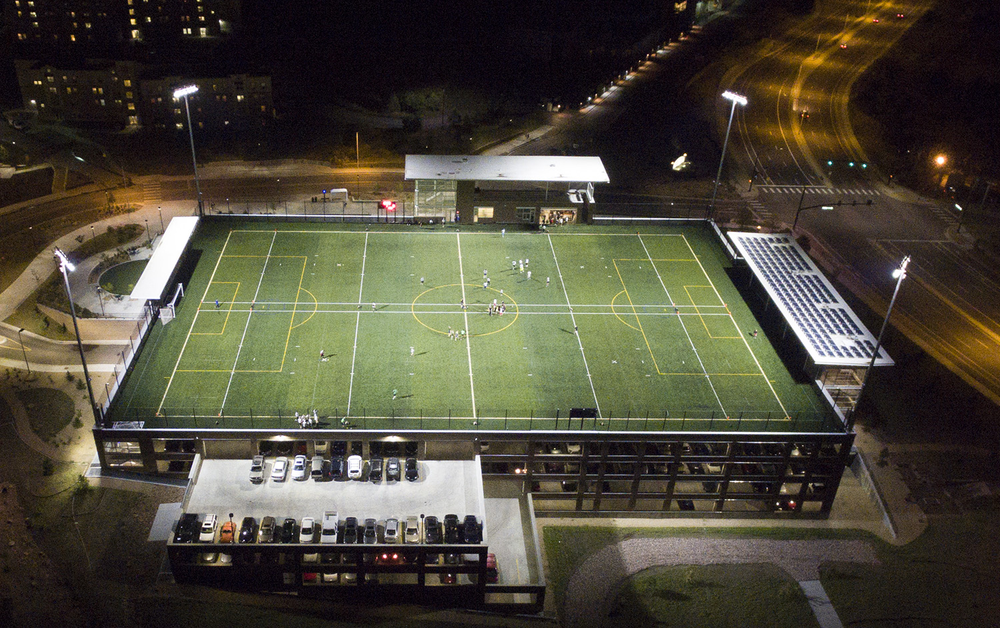
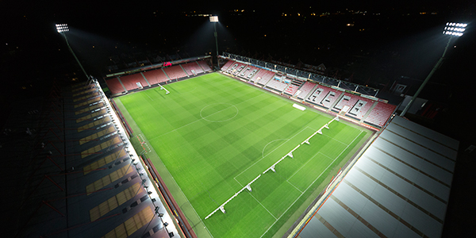
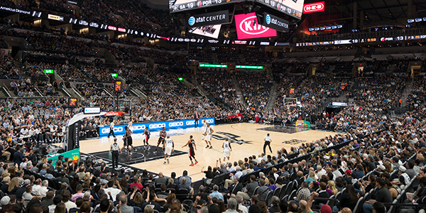
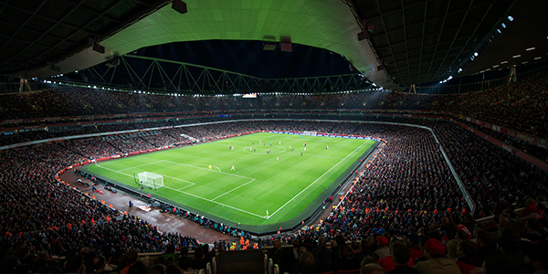
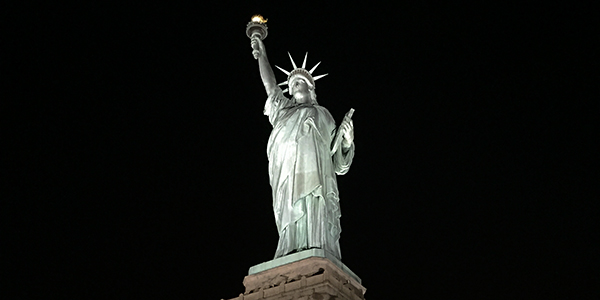
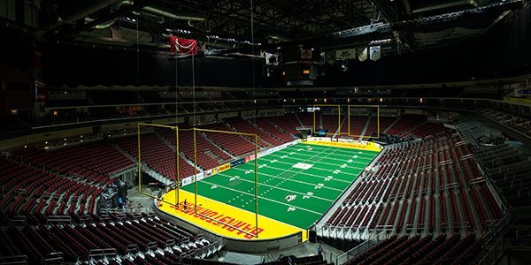
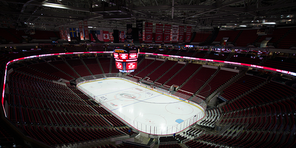

 Musco Engineers Solution to Solve Glare Issues at University of Colorado, Colorado Springs
COLORADO SPRINGS, CO--Musco’s innovative LED lighting system has helped the University of Colorado, Colorado Springs (UCCS) solve a major issue with the surrounding community.
When lights were installed in 2014 at the University’s Alpine Field outdoor sports facility, residents who lived in the surrounding area immediately notified UCCS. Even though the original design met horizontal spill requirements, light from the luminaire was creating glare viewed from their homes. After the original lighting supplier was unable to find a solution, UCCS contacted Musco’s Colorado sales representative... Read More
 AFC Bournemouth Enters Premier League in Premier Fashion
BOURNEMOUTH, England--As the newest addition to the Barclays Premier League for the 2015 season, AFC Bournemouth demonstrated that its home field will shine brightly on the world stage with the addition of Musco’s state-of-the-art LED lighting solution at Vitality Stadium.
Read More
Sewell-Thomas Stadium Installs Innovative LED Lighting Solution
OSKALOOSA, IOWA--The University of Alabama’s Sewell – Thomas Stadium will soon make history as one of the first NCAA baseball fields lit with an LED light source.
Familiar with Musco’s innovative lighting solutions, the University of Alabama has installed Musco’s lighting systems at several venues on campus including its tennis facility and the Sam Bailey Track Stadium. Musco’s Light-Structure Green™ system using an LED light source provides many benefits for players, spectators, and television broadcasts. Read More
Notre Dame Stadium To Feature State-of-the-Art Lighting Solution
NOTRE DAME, INDIANA and OSKALOOSA, IOWA--The University of Notre Dame will add another groundbreaking accomplishment to its rich history with the installation of a new LED lighting system at Notre Dame Stadium as part of the university’s “Campus Crossroads” project. The new lighting solution provided by Musco Lighting will keep Notre Dame Stadium at the forefront of sustainable technology and innovation.
Read More
Petco Park To Install Musco’S LED Lighting This Offseason
SAN DIEGO, CA--Petco Park, home of Major League Baseball’s San Diego Padres, will take the next major step toward energy sustainability this offseason, with the installation of Musco’s SportsCluster® LED system. In partnership with Cisterra Development, installation will begin at the end of December and is scheduled to be completed in early January. Read More
 Dallas Cowboys to Feature Musco's LED Lighting System at AT&T Stadium
Dallas Cowboys to Feature Musco's LED Lighting System at AT&T Stadium
ARLINGTON, TX--The Dallas Cowboys unveiled a new state-of-the-art LED lighting system provided by Musco Lighting in their home opener on September 13. The new lighting system was showcased on primetime television in football season's return this past Sunday night.
As one of the largest NFL venues, AT&T Stadium opened in 2009 as the new home of the Dallas Cowboys. Featuring the world's largest center hung video board, the 80,000 seat stadium has been on the forefront of innovation. Read More
 Musco LED System to Light up the AT&T Center
SAN ANTONIO, TX--Spurs Sports & Entertainment and Bexar County have partnered with Musco to provide the AT&T Center with new state-of-the-art LED lighting as part of the $100+ million in technology and infrastructure renovations at the AT&T Center. The new Musco custom lighting system will include more than 200 luminaires and more than 40,000 LEDs featuring advanced individual optics that will direct the LEDs with pinpoint precision to dramatically reduce glare, enhance playability for athletes, improve HD broadcasts and create a stage-like atmosphere for spectators. Read More
 Emirates Stadium showcases Musco's LED Lighting Solution
HOLLOWAY, London--Arsenal Football Club unveiled Musco's new state-of-the-art LED floodlights at their first evening game of the 2015/16 season against Liverpool at Emirates Stadium.
After nine seasons at Emirates Stadium, Arsenal selected Musco to take the experience of spectators to the next level and maximise energy efficiency. With a nearly 40-year history of providing lighting solutions for premier sporting venues and events, Musco brought the innovative system and application experience that was needed to accomplish this goal. Read More
AFC Bournemouth Announces New Musco LED Lighting System
BOURNEMOUTH, ENGLAND--AFC Bournemouth has chosen Musco Lighting as its partner to install new floodlights using an LED light source at Vitality Stadium for its debut season in the Barclays Premier League.
AFC Bournemouth recently earned a promotion to the top flight for the first time in the club's history and wanted to ensure a premiere entertainment experience at Vitality Stadium for its supporters. Read More
 Seminole County Set to Install Musco LED Lighting System at New Sports Complex
Seminole County Set to Install Musco LED Lighting System at New Sports Complex
SANFORD, FL--This fall, Seminole County will install Musco's Light-Structure Green™ system with an LED light source at its new sports complex. The complex is set to open in the spring of 2016.
The Seminole County Sports Complex will feature 15 fields that host soccer, baseball, softball, and lacrosse. Musco's system will meet the individual lighting needs of each sport, ensuring optimized light control and energy efficiency, and will also help Seminole County meet its various goals for the project. Read More
 New LED Lighting System Will Illuminate Statue of Liberty July 7
NEW YORK, NY--The National Park Service announces that the Statue of Liberty will shine as never before beginning the evening of July 7. A new lighting system will be activated at sunset, approximately 8:45 p.m., thanks to a generous donation of equipment by Musco Lighting of Oskaloosa, Iowa. Musco Lighting has had a close partnership with the National Park Service for many years. The Statue of Liberty joins numerous national treasures to be lit with Musco's innovative lighting solutions using the light-emitting diode (LED) light source. Read More
 Mount Rushmore Introduces Unique Lighting System
Mount Rushmore Introduces Unique Lighting System
KEYSTONE, SD & OSKALOOSA, IA--The more than two million visitors who travel to Mount Rushmore National Memorial each year will now enjoy an enhanced night time viewing experience, thanks to an innovative new lighting system with an LED light source that was recently installed at the memorial. The new system, custom designed and manufactured by Musco, will result in substantially less light pollution, while dramatically improving the lighting at the national memorial and saving energy. Read More
 Iowa Events Center Announces Installation of Musco's LED Lighting System
DES MOINES, Iowa--The Iowa Events Center's Wells Fargo Arena – home to the Iowa Energy, the Iowa Barnstormers, and the Iowa Wild – will take its entertainment experience to the next level thanks to a new, innovative LED lighting solution designed and manufactured by Musco Lighting. The arena is celebrating its 10th anniversary with $2.5 million in renovations. Read More
 Mount St. Louis Moonstone among First Ski Resorts with LED Lights
Mount St. Louis Moonstone among First Ski Resorts with LED Lights
COLDWATER, Ontario & OSKALOOSA, Iowa--The nearly 300,000 yearly skiers and snowboarders at the Mount St. Louis Moonstone Ski Resort (MSLM) will enjoy an experience few other resorts in the world can match, thanks to an innovative LED lighting system by Musco Lighting. This efficient system will help MSLM conserve energy, lessen its environmental impact, extend hours for nighttime use and eliminate maintenance costs over the next decade. Read More
 Musco LED System Shines at The Palace of Auburn Hills
Musco LED System Shines at The Palace of Auburn Hills
OSKALOOSA, Iowa--The Palace of Auburn Hills—home to the NBA’s Detroit Pistons—continues a legacy of providing leading-edge sports entertainment thanks to a newly installed, state-of-the-art lighting system by Musco Lighting.
“We’ve installed our innovative lighting solution using the LED light source at premier facilities around the world, each custom designed to meet the unique needs of players, spectators and television broadcasts,” said Jeff Rogers, Vice President of Developmental Sales, Musco Lighting." Read More
 Wells Fargo Center Becomes One of the First NHL and NBA Arenas to Feature LED Lighting System
Wells Fargo Center Becomes One of the First NHL and NBA Arenas to Feature LED Lighting System
PHILADELPHIA--When the Philadelphia Flyers take the ice against the New Jersey Devils on Thursday, October 9, it will be under an innovative new LED lighting system, making the Wells Fargo Center one of the first NHL and NBA arenas to feature the state-of-the-art lights.
The new system is the result of a partnership between arena owner Comcast-Spectacor and Musco Lighting, the global innovator in sports lighting solutions, and will deliver an unparalleled arena experience for fans and improve energy efficiency. Read More
 PNC Arena to Unveil New LED Lights
RALEIGH, N.C. & OSKALOOSA, Iowa--PNC Arena, home to the National Hockey League's Carolina Hurricanes, will usher in a new era for professional sports this season as the first NHL venue in the U.S. to feature LED lighting. The Centennial Authority has invested $650,000 in the innovative new system. This system represents the continuation of a relationship between the Centennial Authority, which owns PNC Arena, and Musco, which installed the facility's original lights when it opened in 1999. Read More
 LakePoint is the first multi-field sports complex to use Musco's LED lighting
LakePoint is the first multi-field sports complex to use Musco's LED lighting
EMERSON, Ga.--LakePoint Sporting Community, the world's largest sports vacation destination, has partnered with the leading innovator of sports lighting solutions, Musco Lighting, to provide a LED lighting system for enhanced playability and energy efficiency. LakePoint is the first multi-field sports complex to use Musco's cutting-edge lighting solution harnessing LED technology to direct more light onto the playing surface.
Read More